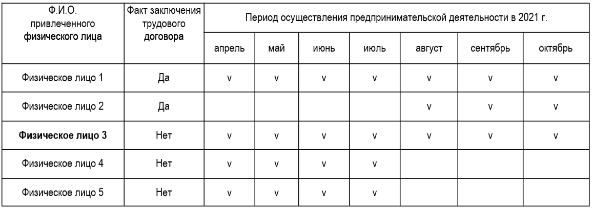

Статья опубликована на портале ilex.by и на
сайте
Палаты налоговых консультантов.
Актуально на 04.10.2022.
ОСОБЕННОСТИ АДМИНИСТРАТИВНОЙ ОТВЕТСТВЕННОСТИ ЗА НЕЗАКОННУЮ ПРЕДПРИНИМАТЕЛЬСКУЮ ДЕЯТЕЛЬНОСТЬ
Рассмотрим пример из правоприменительной практики о привлечении к административной ответственности по ст. 13.3 КоАП.
Экономический суд вынес в отношении ИП постановление по делу об административном правонарушении по ч. 3 ст. 13.3 КоАП. Назначил административное взыскание в виде штрафа в размере 25 БВ (800 руб.) с конфискацией 10% дохода (18699 руб.).
ИП в период с 01.04.2021 по 31.10.2021 осуществлял в торговом объекте незаконную предпринимательскую деятельность - реализацию одежды с привлечением физических лиц. В период с 01.04.2021 по 31.7.2021 - с привлечением четырех физических лиц, с тремя из которых не заключил трудовой (гражданско-правовой) договор. С период с 01.08.2021 по 31.10.2021 - с привлечением трех физических лиц, с одним из которых не заключил такой договор.
Наглядно привлечение физических лиц к предпринимательской деятельности с заключением трудовых договоров и без в период с 01.04.2021 по 31.10.2021 выглядело так (таблица).
Примечание: значком v отмечены месяцы, в которых ИП привлекал физические лица к осуществлению предпринимательской деятельности.
ИП обжаловал постановление экономического суда в порядке ПИКоАП. Постановлением от 25.02.2022, постановление экономического суда было оставлено без изменения, соответствующая жалоба - без удовлетворения.
Признал период осуществления незаконной предпринимательской деятельности с апреля по июль 2021 г., а также незаконно полученный доход в части от вмененного.
В обоснование вмененного ИП периода совершения административного правонарушения по ч. 3 ст. 13.3 КоАП суд ссылался на п. 2 Указа N 285. ИП был ограничен в возможном количестве привлекаемых работников, а также обязан был оформить с ними отношения, заключив трудовой и (или) гражданско-правовой договор. Системный анализ законодательства, регулирующего публично-правовые обязательства в сфере предпринимательства, свидетельствует, что граждане при осуществлении предпринимательской деятельности обязаны привлекать к ней физических лиц по трудовым и (или) гражданско-правовым договорам. Причем в силу п. 2 Указа N 285 таких граждан должно быть не более трех.
ИП признал нарушение данного требования, однако периодом осуществления незаконной деятельности (привлечения четырех человек) полагал апрель - июль 2021 г. По мнению ИП, при ведении административного процесса имело место неверное трактование вышеназванной нормы. Пункт 2 Указа N 285 указывает на необходимость соблюдать единое условие осуществления предпринимательской деятельности, а не два альтернативных, как оценил суд, возможных самостоятельных условий:
- привлечение не более трех лиц;
- наличие трудового и (или) гражданского-правового договора.
По приведенным выше критериям ИП оспаривал вывод суда о возможности образования объективной стороны административного правонарушения, предусмотренного ч. 3 ст. 13.3 КоАП, альтернативно, а именно привлечением к предпринимательской деятельности более трех наемных работников и (либо) несоблюдением обязанности заключить с каждым из них трудовой или гражданско-правовой договор. На взгляд ИП, правовых критериев и возможности возникновения объективной стороны рассматриваемого правонарушения ввиду названных альтернативных условий постановление от 25.02.2022 не содержало. В анализируемой части его положения не согласовывались с дословным содержанием п. 2 Указа N 285.
Постановление от 25.02.2022 указывало на корреспонденцию определенного Указом N 285 условия с выполнением ИП возложенной на него Законом N 3563-XII обязанности обеспечить гарантии государственного социального страхования гражданам, работающим у этого ИП по трудовым и (или) гражданско-правовым договорам.
Данный вывод ИП определил при обжаловании как самостоятельный критерий необоснованности квалификации его действий по ч. 3 ст. 13.3 КоАП в части оспариваемого периода. За нарушение обязанности плательщика своевременно стать на учет в органы ФСЗН (абз. 2 п. 1 ст. 21 Закона N 118-З) законодательство предусматривает иную, не определяемую ст. 13.3 КоАП ответственность. За неисполнение или ненадлежащее исполнение указанной обязанности плательщики несут ответственность в соответствии с законодательными актами (п. 2 ст. 21 Закона N 118-З). В то же время ст. 11.19 КоАП, установившая ответственность за нарушение срока постановки на учет в ФСЗН в качестве плательщика, исключена из КоАП с 31.01.2018. Ответственность за нарушение в виде неуплаты или неполной уплаты в срок обязательных страховых взносов или взносов на профессиональное пенсионное страхование в бюджет ФСЗН плательщиками за физических лиц регулирует ст. 12.15 КоАП.
Таким образом, нарушение порядка постановки на учет в органах ФСЗН, неуплата или неполная уплата в срок обязательных страховых взносов в ФСЗН - это самостоятельные (иные, чем предусмотренные ст. 13.3 КоАП) административные нарушения.
При приеме на работу наниматель обязан заключить трудовой договор в письменной форме (п. 5 ч. 1 ст. 54 ТК). ИП указал, что самостоятельно вел кадровый учет. В силу незнания норм ТК ошибочно считал, что работа на испытательном сроке подпадает под нормы трудового права и сотрудник считается трудоустроенным. Исходя из этого, неверно принимал на работу людей на период испытательного срока. В оспариваемый период ИП не преследовал цель осуществлять незаконную предпринимательскую деятельность.
Кроме того, ИП ссылался на положения ч. 1 п. 7 постановления Пленума Верховного Суда 29.03.2001 N 2, в соответствии с которой и в силу ст. 25 ТК фактическое допущение работника к работе должностным лицом нанимателя, уполномоченным осуществлять прием на работу, также является заключением трудового договора.
Таким образом, из позиции ИП следовало, что в рассматриваемой ситуации имело место нарушение порядка приема граждан на работу, влекущее административную ответственность по ст. 10.12 КоАП, а не по ч. 3 ст. 13.3 КоАП. Исходя из вышеизложенного, ИП согласился с нарушением в части незаконной предпринимательской деятельности по критерию привлечения более трех физических лиц к ее осуществлению лишь в период с апреля по июль 2021 г. Полагал, что из размера незаконно полученного дохода, определенного постановлениями от 04.01.2022 и 25.02.2022, следовало исключить доход за период с августа по октябрь 2021 г.
По мнению ИП, анализ вышеупомянутой нормы ТК и критериев правоприменительной практики, определенных постановлением Пленума Верховного Суда от 29.03.2001 N 2, свидетельствовал о фактическом соблюдении ИП условий заключения трудового договора с работником 3 (таблица). В совокупности с приведенным выше обоснованием и установленным п. 2 Указа N 285 критерием количества занятых лиц (не более трех) это предполагало отсутствие в действиях ИП состава административного правонарушения, предусмотренного ч. 3 ст. 13.3 КоАП, за период с августа по октябрь 2021 г.
Апелляционная инстанция оставила постановление экономического суда от 25.02.2022 без изменения, а апелляционную жалобу без удовлетворения. Сочла позицию ИП не согласующейся с правоприменительной практикой с точки зрения оценки наличия в подобных действиях признаков состава административного правонарушения, предусмотренного ст. 13.3 либо 10.12, 12.15 КоАП. Доводы ИП об отсутствии в его действиях признаков незаконной предпринимательской деятельности в подлежащий, по его мнению, исключению период суд отнес к условно обоснованным и согласующимся со ст. 25 ТК, п. 7 постановления Пленума Верховного Суда от 29.03.2001 N 2.
Ввиду изложенного при определении перспектив защиты в административном процессе следует принимать во внимание правоприменительную практику.